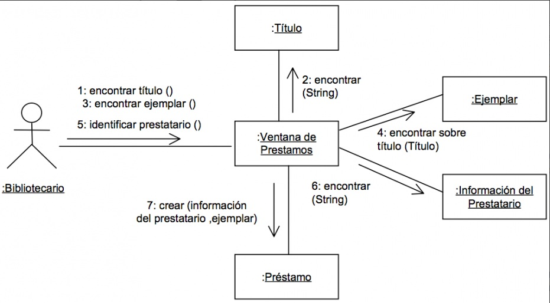
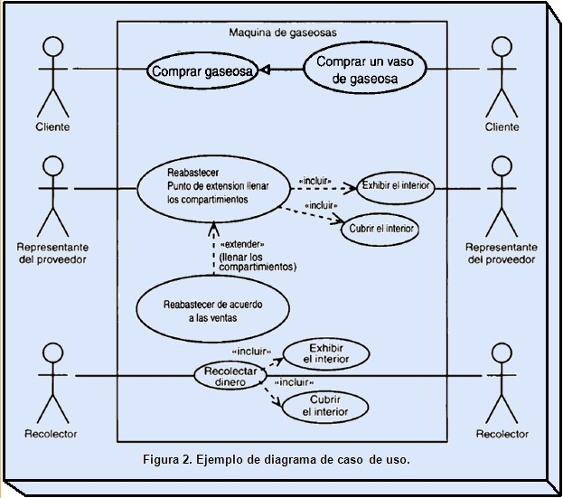

Diseño de Sistemas TI
Tec. Desarrollo de Software


Ejemplos de los diagrama de interacción (UML)
Ejemplo de diagrama de secuencia
Como podemos obserevar en el diagrama de Secuencia todos los eventos o los pasos para llegar al objetivo suceden de forma secuencia o ordena, o que algun evento no sucedera hasta que ocurra el anterior evento o suceso. Mientras que en el diagrama Colaborativo estan sucediendo varios eventos posiblemente al mismo tiempo que otros estan en curso.
Ejemplo de diagrama de colaboración
Diagrama de colaboracio´n para el caso de uso: Prestar un ejemplar de una aplicacio´n encargada de los pre´stamos y reservas de una biblioteca.